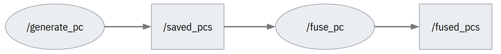
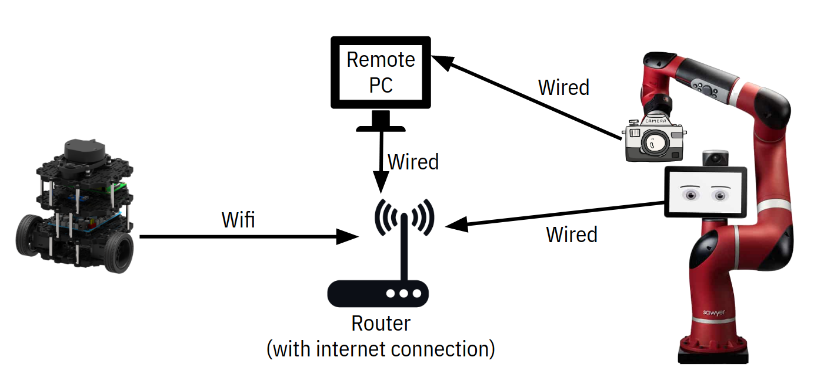

Robotic 3D Scanner
Worked on a team to build a multi-robot system capable of 3D scanning. Created a point cloud processing pipeline that fuses point clouds then crops the background.

Overview
We created an automated system for reconstructing objects with point clouds.
The system hardware includes a Rethink Sawyer robot arm, an Intel RealSense camera, and a TurtleBot3 Burger.
The TurtleBot3 is used as a turntable for the object being scanned.
As the Turtlebot3 rotates, The RealSense saves a point cloud every 90 degrees of rotation to capture all sides of the object.
Then, the arm moves the RealSense to a top-down view for the final scan.
All saved point clouds are transformed and fused into a single pointcloud.
The background is then cropped from the final point cloud.
All software was written using C++ and Python within the ROS communication framework.

Figure 1. Robotic 3D scanning of a bottle. Robotic arm holds depth camera as robotic turntable spins the bottle. Gif plays at 2x real speed.
Point Cloud Processing Pipeline
My primary contribution to this project was the software that collects point cloud data and reconstructs the object being scanned.
Using the publisher/subscriber infrastructure in ROS, I created a Python script and a C++ that work together for scanning and reconstruction.
The scanning is done in the Python node,
generate_pc.
This node provides a service to save point clouds from the RealSense camera.
Everytime a point cloud is saved, the service transforms the point cloud from a camera frame to a TurtleBot3 frame.
This rotates the point cloud based on odometry data from the TurtleBot3.
Saved point clouds are published to the saved_pcs topic.
The fuse_pc
node is a C++ script that subscribes to the saved_pcs topic.
As point clouds are saved, each newly saved point cloud is fused with the previously saved point clouds.
After fusion, the script crops background data from the fused point cloud leaving just the scanned object.
The final point cloud is published to the fused_pcs topic.

Figure 2. ROS nodes and topics in point cloud processing pipeline. Generate_pc saves and transforms point clouds. Fuse_pc fuses and crops background from point clouds.
Networking
One of the biggest challenges of this project was networking between multiple robots. For this project to be successful we needed all robots and computers to communicate on the same ROS_MASTER_URI. We solved this challenged by connecting all robots and computers to the same router. By connecting the router to the internet, we were able to syncronize time between machines allowing for seemless communication. 
Figure 3. Networking diagram of robotic 3D scanner. Robots communicate and syncronize time through a router.
Robotic Motion
The motion of the Sawyer arm and TurtleBot3 are controlled by two nodes, turntable and scanner_arm. The turntable node controls the TurtleBot3's rotation. It provides a ROS service to rotate the TurtleBot3 by a desired angle. The scanner_arm node utilizes the services provided by the turntable and generate_pc nodes. This script sends commands to rotate the TurtleBot3 and save point clouds from the RealSense at the appropriate times.
Flaws & Improvements
This project contains many subsystems that needed to be developed before we could begin testing and improving the entire system. This section will touch on the changes we were able to make during final testing.
TurtleBot3 Odometry
The backbone of our project was the point cloud processing pipeline.
This pipeline relied on the TurtleBot3's odometry (from IMU) to transform saved point clouds before fusion.
Uncertainty in the odometry resulted in poorly fused point clouds. The results of this are shown in the gifs below.

Figure 4. 3D scans using TurtleBot3 odometry for transformations. Expo bottle (left), Soldering clamp stand (center), White water bottle (right).
Moving forward, we had two options. The first option was to manually calculate the rotation of the TurtleBot3 by integrating the joint states of the wheels. We decided against this solution because the TurtleBot3 has noticeable drift during rotation, and this solution assumes the TurtleBot3 rotates without translation. The second option was to use SLAM instead of odometry data.
SLAM
To incorporate SLAM, we took advantage of the ROS SLAM Toolbox and modified the point cloud processing pipeline.
We created two new ROS nodes,
generate_pc_SLAM and
fuse_pc_SLAM,
that transform point clouds using localization from SLAM.
Unfortuantely, we were unable to crop the background of these point clouds before the project deadline.
The results are shown in the gifs below.

Figure 5. 3D scans using SLAM for transformations. White shoe (left), Clorox bottle (right).
Future Work
Continuous Point Cloud Fusion
One of the main shortcomings of this project was the fact that our pipeline only fused five pointclouds each a 90 degree rotation from each other.
For optimal scanning, we would like to (almost) continuously save and fuse point clouds as the TurtleBot3 is rotating.
To do this we could implement the iterative closest point (ICP) algorithm to fuse the point clouds.
Multi Angle Scan
Using the ICP algorithm would allow for more freedom with arm movement as well.
By moving the arm to various vantage points, we could collect more depth data for fusion and create more accurate 3D scans.
We began implementing the arm motion for this feature in a node named
scanner_arm_multi.
Teammates
Tianyu Li
Yen Chin Loke
Bowen Feng
Nicole Baptist